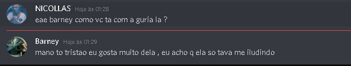
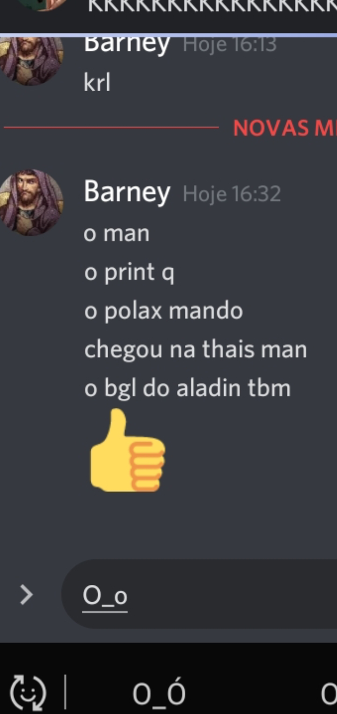
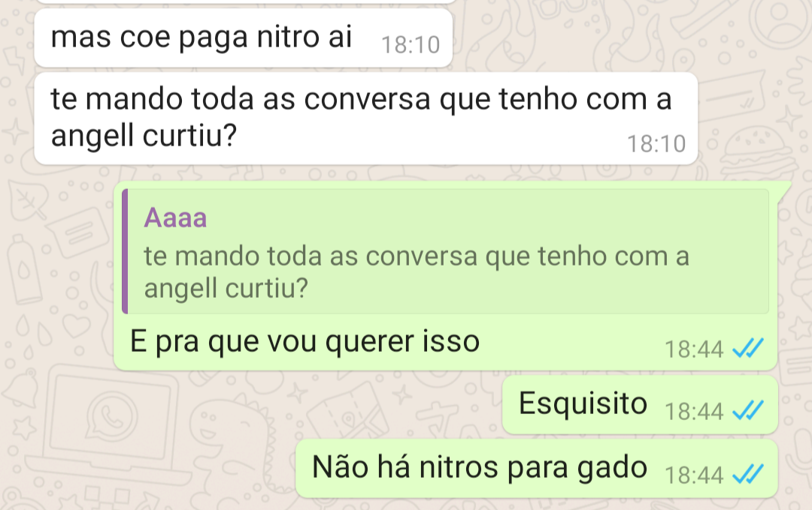
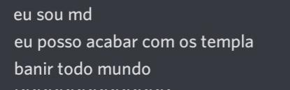
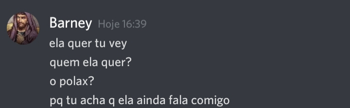
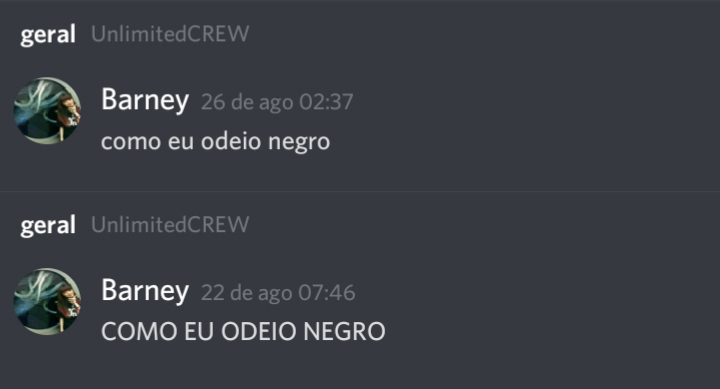
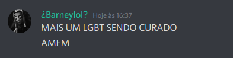
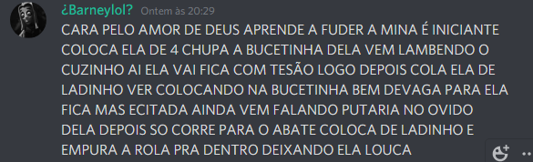
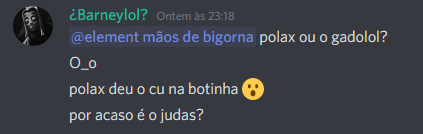

Olá, como vocês ja devem saber, O Lucas Peres, também conhecido como "Barney" teve muitas ocorrências e falas de baixo calão durante esses tempos... Coisas como declarações machistas, racistas, e traições. Esse jovem chernoboy, não só desvalorizou a amizade com seus amigos, como também insultou as mulheres que o apoiavam, confira algumas imagens:









Pelas imagens acima, vemos que este cidadão não respeita nenhum tipo de crença, está totalmente contra tudo o que não lhe agrada. Sendo assim, está levando um exposed para parar de brincar com coisas sérias na internet e ir estudar para ser alguém na vida.